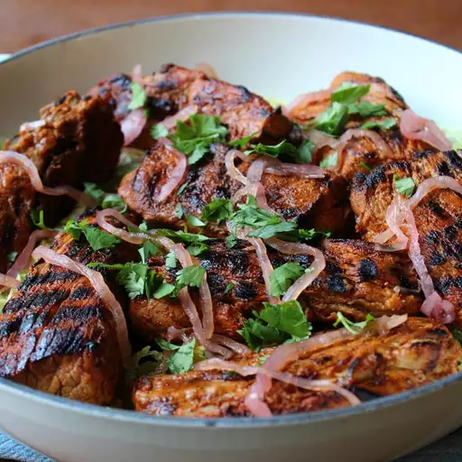

Grilled Pork

Description
This may not be an authentic Yucatan peninsula recipe, but it's just like a similarly named dish I had at a sports bar. It has vibrant citrus/chile flavors and a beautiful orange hue from ground annatto.
Ingredients
- 2 oranges, juiced
- 2 lemons, juiced, or more to taste
- 2 limes, juiced, or more to taste
- 6 cloves garlic, minced
- 1 tablespoon kosher salt
- 1 teaspoon annatto powder, or more to taste, plus more to sprinkle on before grilling
- 1 teaspoon ground dried chipotle pepper
- 1 teaspoon ground cumin
- ½ teaspoon cayenne pepper
- ½ teaspoon dried oregano
- ½ teaspoon freshly ground black pepper
- 2 pork tenderloins, trimmed
- 1 tablespoon vegetable oil
Steps
- Place orange juice, lemon juice, and lime juice in a bowl. Add garlic, kosher salt, annatto powder, chipotle powder, ground cumin, cayenne, oregano, and black pepper. Whisk until well blended.
- Cut the tenderloins in half crosswise; cut each piece in half lengthwise. Place pieces in marinade and thoroughly coat with the mixture. Cover with plastic wrap with the wrap touching the surface of the meat and marinade. (Or transfer mixture to a resealable plastic bag.) Refrigerate 4 to 6 hours.
- Transfer pieces of pork from marinade to a paper-towel-lined bowl to absorb most of the moisture. Discard paper towels. Drizzle vegetable oil and a bit more annatto powder on the pork.
- Preheat an outdoor grill for medium-high heat and lightly oil the grate.
- Place pieces evenly spaced on a hot grill. Allow meat to sear onto the grate until pieces can be easily turned, 4 or 5 minutes. Turn and grill on the other side another 4 or 5 minutes. An instant-read thermometer inserted into the center should read 135 to 140 degrees F (63 degrees C). Transfer onto a serving platter and allow meat to rest about 5 minutes before serving.